← WebView & Angular support analysis · DOM layer (read-only) · POC Outcome
iPad Air 11" (M2), iPadOS 26.5 · Angular Rule Lab · VoiceOver output captured for every element of all 41 rule pages with the iOS accessibility audit service
(pymobiledevice3 developer accessibility list-items, the same engine Accessibility Inspector uses for its VoiceOver "spoken description"; VoiceOver itself cannot be toggled remotely) ·
our capture = the read-only in-process DOM layer (v5) scans · plus a 44-min screen recording of real VoiceOver
navigating every rule page (watch the recording). Its on-screen caption panel was OCR'd at 2 fps; the full announcement after each pause is kept. · 1 Oct 2026
<img> is read by its inner text ("50% OFF") rather than its alt.| Element | Real VoiceOver says | Audit service caption | Our caption | Change to match VoiceOver |
|---|---|---|---|---|
| Button / link | "…, Button" · "…, Link" | same | same | none |
| Text field | "Email address, Text field" (+ value / placeholder; "Secure text field" for passwords) | no role word | "…, Text field" | add value / placeholder; "Secure text field" for type=password |
| Checkbox | "…, Checkbox, ticked / unticked" | "0/1, Button, Toggle" | "Selected, …, Checkbox" | append ticked / unticked; drop the "Selected" prefix |
| Switch | "…, Switch button, on / off, Double-tap to toggle setting." | "0/1, Button, Toggle" | "…, Switch button" | append on / off |
| Radio button | "…, Radio button, ticked, 1 of 2" | "0/1, Toggle" | "…, Radio button" | append state + position |
Toggle button (aria-pressed) | "Wi-Fi on, Toggle button, Pressed" | "1, Button, Toggle" | "Selected, …, Button" | "Toggle button, Pressed" |
| Tab | "Search, Tab" (selected: "…, Selected") | no role word | "…, Button, Tab" | "Tab" only |
| Heading | "…, Heading level 2" | "…, 2, Header" | "…, Heading" | add the level |
| Image | usually VoiceOver's own description ("Profile" · "Chart, Person"); SVG-as-img read by its inner text | "…, Image" | "…, Image" | keep; flag that VoiceOver may override |
| Disabled control | not in the recording (iOS VoiceOver normally says "Dimmed") | "…, Button, Not Enabled" | no state | append a disabled word; verify on device |
Source recording: VoiceOver on the Rule Lab (iPad, 44 min, Google Drive).
Method: the recording's caption panel (bottom in portrait, right edge in landscape) was OCR'd with Apple Vision at 2 fps. Consecutive captions that extend the previous one were merged, keeping the longest one (the full description after the pause).
The page came from the title bar and the test case from the "TCn" item VoiceOver read. Back-and-forth navigation was de-duplicated. A few OCR artefacts remain, such as an extra comma where the caption wraps.
Spoken output identicalName matches; role/state wording differsName differsCaptured, not announced by VoiceOverAnnounced, not captured
| Outcome | Elements | Share |
|---|---|---|
| Spoken output identical | 232 | 66% |
| Name matches; role/state wording differs | 71 | 20% |
| Name differs | 5 | 1% |
| Captured, not announced by VoiceOver | 14 | 4% |
| Announced, not captured | 30 | 9% |
"Announced, not captured" items are mostly the app's own chrome and text that VoiceOver reads (test-case headers are excluded). "Captured, not announced" means a node we mark as accessible that VoiceOver skips.
| Pattern (our trailing words vs VoiceOver's) | Elements | Examples |
|---|---|---|
| TextField: ours “…, Text field” vs VO “…, ∅” | 27 | accessible-input-field-label TC1: ours “Email, Text field” · VO “Email” accessible-input-field-label TC2: ours “Full name, Text field” · VO “Full name” accessible-input-field-label TC3: ours “City, Text field” · VO “City” |
| WebCheckBox: ours “…, Checkbox” vs VO “…, 0, Button, Toggle” | 5 | checkbox-element-content-label TC1: ours “Checkbox” · VO “0, Button, Toggle” checkbox-element-content-label TC2: ours “Checkbox” · VO “0, Button, Toggle” checkbox-element-content-label TC3: ours “Checkbox” · VO “0, Button, Toggle” |
| WebLabel: ours “…, Heading” vs VO “…, 2, Header” | 5 | incorrect-heading TC1: ours “Tap to continue, Heading” · VO “Tap to continue, 2, Header” incorrect-heading TC3: ours “Section, Heading” · VO “Section, 2, Header” incorrect-heading TC5: ours “Saved payment methods, Heading” · VO “Saved payment methods, 2, Header” |
| WebCheckBox: ours “…, Checkbox” vs VO “…, ∅” | 4 | checkbox-element-content-label TC5: ours “Accept terms, Checkbox” · VO “Accept terms” state-in-content-label TC5: ours “Selected, Notifications, Checkbox” · VO “Notifications” view-type-in-content-label TC3: ours “Remember me checkbox, Checkbox” · VO “Remember me checkbox” |
| WebSwitch: ours “…, Switch button” vs VO “…, 1, Button, Toggle” | 4 | state-in-content-label TC4: ours “Selected, Dark mode enabled, Switch button” · VO “Dark mode enabled, 1, Button, Toggle” missing-view-type-in-spoken-output TC4: ours “Selected, Auto-play, Switch button” · VO “Auto-play, 1, Button, Toggle” switch-element-content-label TC5: ours “Selected, Wi-Fi, Switch button” · VO “Wi-Fi, 1, Button, Toggle” |
| WebSwitch: ours “…, Switch button” vs VO “…, 0, Button, Toggle” | 4 | view-type-in-content-label TC4: ours “Dark mode switch, Switch button” · VO “Dark mode switch, 0, Button, Toggle” switch-element-content-label TC1: ours “Switch button” · VO “0, Button, Toggle” switch-element-content-label TC2: ours “Switch button” · VO “0, Button, Toggle” |
| WebLabel: ours “…, ∅” vs VO “…, 0, Button, Toggle” | 3 | checkbox-element-content-label TC5: ours “Accept terms” · VO “Accept terms, 0, Button, Toggle” view-type-in-content-label TC3: ours “Remember me checkbox” · VO “Remember me checkbox, 0, Button, Toggle” non-text-color-contrast TC3: ours “Save card” · VO “Save card, 0, Button, Toggle” |
| UITextView: ours “…, Text field” vs VO “…, ∅” | 3 | editable-element-content-label TC2: ours “Text field” · VO “” editable-element-content-label TC4: ours “Text field” · VO “” editable-element-content-label TC6: ours “Delivery notes, Text field” · VO “Delivery notes” |
| WebImageView: ours “…, Image” vs VO “…, ∅” | 3 | images-of-text TC1: ours “50% off summer sale, Image” · VO “50% OFF” images-of-text TC3: ours “Scan the QR code at the counter to pay, Image” · VO “Scan the QR code at the” images-of-text TC4: ours “Acme Foods, Image” · VO “Acme Foods” |
| WebLabel: ours “…, ∅” vs VO “…, ∅” | 3 | link-text-purpose TC1: ours “For refunds, .” · VO “For refunds,” touch-target-size TC5: ours “By continuing you agree to the of service.” · VO “By continuing you agree to the” touch-target-size-and-spacing TC5: ours “· ·” · VO “·” |
| WebTabButton: ours “…, Button, Tab” vs VO “…, Selected” | 2 | state-in-content-label TC3: ours “Selected, Home selected, Button, Tab” · VO “Home selected, Selected” missing-view-type-in-spoken-output TC5: ours “Selected, Day, Button, Tab” · VO “Day, Selected” |
| WebTabButton: ours “…, Button, Tab” vs VO “…, ∅” | 2 | state-in-content-label TC3: ours “Search, Button, Tab” · VO “Search” missing-view-type-in-spoken-output TC5: ours “Week, Button, Tab” · VO “Week” |
These differences matter for the rules that read the spoken output (missing view type, view-type / state in label). For example, VoiceOver announces a web checkbox as "…, 1, Button, Toggle", while our caption says "Checkbox".
| Rule | TP | FN | FP | TN | AI pending | Edge |
|---|---|---|---|---|---|---|
| Label in Name | 3 | 1 | 1 | |||
| Accessibility Label at front | 2 | 2 | ||||
| Interactive Element Accessibility Label | 3 | 1 | 2 | |||
| Meaningful accessibility label for images | 2 | 1 | 3 | |||
| Switch Element Accessibility Label | 5 | 1 | ||||
| Duplicate Accessibility Label on Screen | 2 | 1 | 1 | |||
| Duplicate State Info in Spoken Output | 4 | 1 | ||||
| Duplicate Type Info in Spoken Output | 3 | 2 | 1 | |||
| Special-Character Element Accessibility Label | 3 | 1 | 1 | 1 | ||
| Button Element Accessibility Label Capitalization | 3 | 1 | 2 | |||
| Link Text Purpose | 3 | 2 | 1 | |||
| Missing View Type in Spoken Output | 2 | 1 | 2 | |||
| Editable Element Accessibility Label | 2 | 4 | ||||
| Accessible Input Field Labels | 2 | 3 | 1 | |||
| Spoken Description not Meaningful | 3 | 1 | ||||
| Checkbox Element Content Label | 4 | 2 | ||||
| Total | 28 | 18 | 0 | 14 | 19 | 8 |
TP = expected FAIL and reported FAIL · FN = expected FAIL, not reported · FP = expected PASS, reported FAIL · TN = expected PASS, not reported FAIL. Expected verdicts come from the test catalog; the VoiceOver column on each card shows whether the defect is real in what users hear.
Rule verdicts vs expected: TP 3 · TN 1 · edge 1
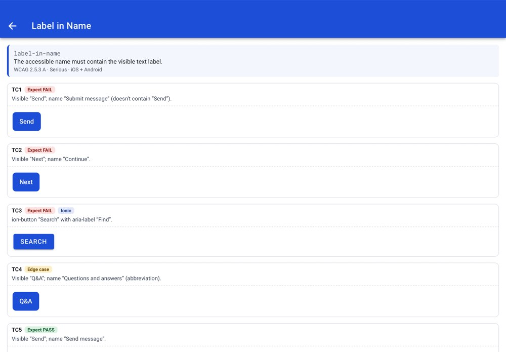
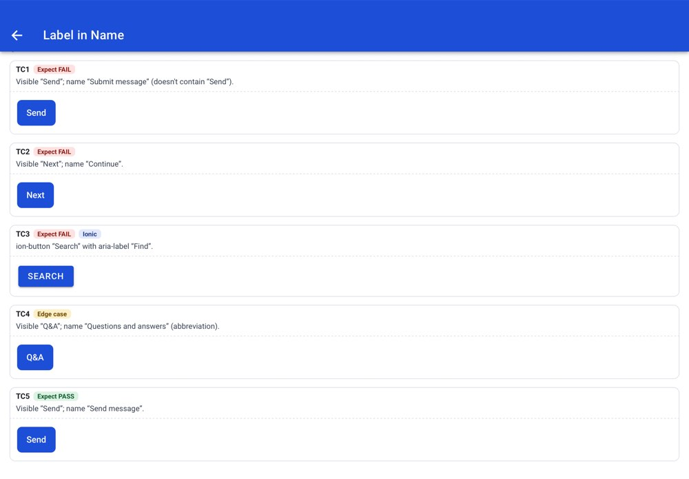
| TC | Expect | We capture (spoken caption) | Audit service (VoiceOver engine) | VoiceOver, screen recording | Comparison | Rule result |
|---|---|---|---|---|---|---|
| TC1 | FAIL | Submit message, Button | Submit message, Button | Submit message, Button | Spoken output identical | fail |
| TC2 | FAIL | Continue, Button | Continue, Button | Continue, Button | Spoken output identical | fail |
| TC3 | FAIL | Find, Button | Find, Button | Find, Button | Spoken output identical | fail |
| TC4 | EDGE | Questions and answers, Button | Questions and answers, Button | Questions and answers, Button | Spoken output identical | fail |
| TC5 | PASS | Send message, Button | Send message, Button | Send message, Button, end, main | Spoken output identical | pass |
Rule verdicts vs expected: FN 2 · TN 2
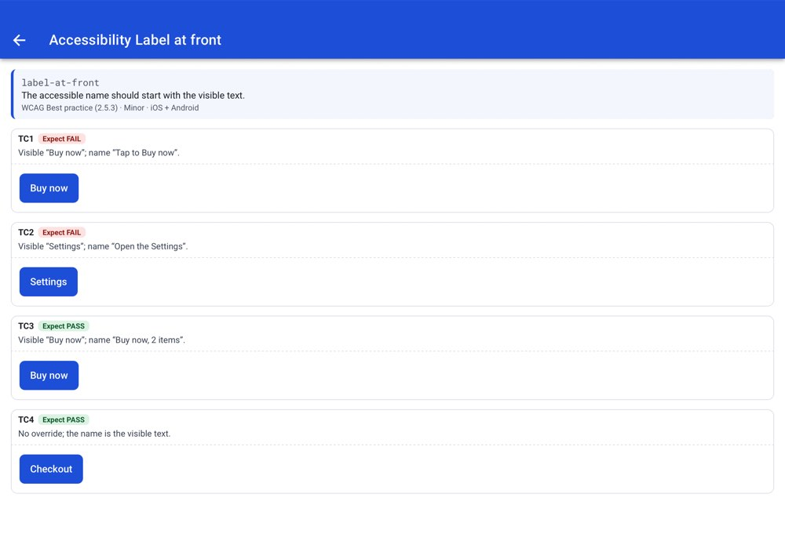
| TC | Expect | We capture (spoken caption) | Audit service (VoiceOver engine) | VoiceOver, screen recording | Comparison | Rule result |
|---|---|---|---|---|---|---|
| TC1 | FAIL | Tap to Buy now, Button | Tap to Buy now, Button | Tap to Buy now, Button | Spoken output identical | pass |
| TC2 | FAIL | Open the Settings, Button | Open the Settings, Button | Open the Settings, Button | Spoken output identical | pass |
| TC3 | PASS | Buy now, 2 items, Button | Buy now, 2 items, Button | Buy now, 2 items | Spoken output identical | pass |
| TC4 | PASS | Checkout, Button | Checkout, Button | Checkout, Button, end, main | Spoken output identical | pass |
Rule verdicts vs expected: TP 3 · FN 1 · ai 2
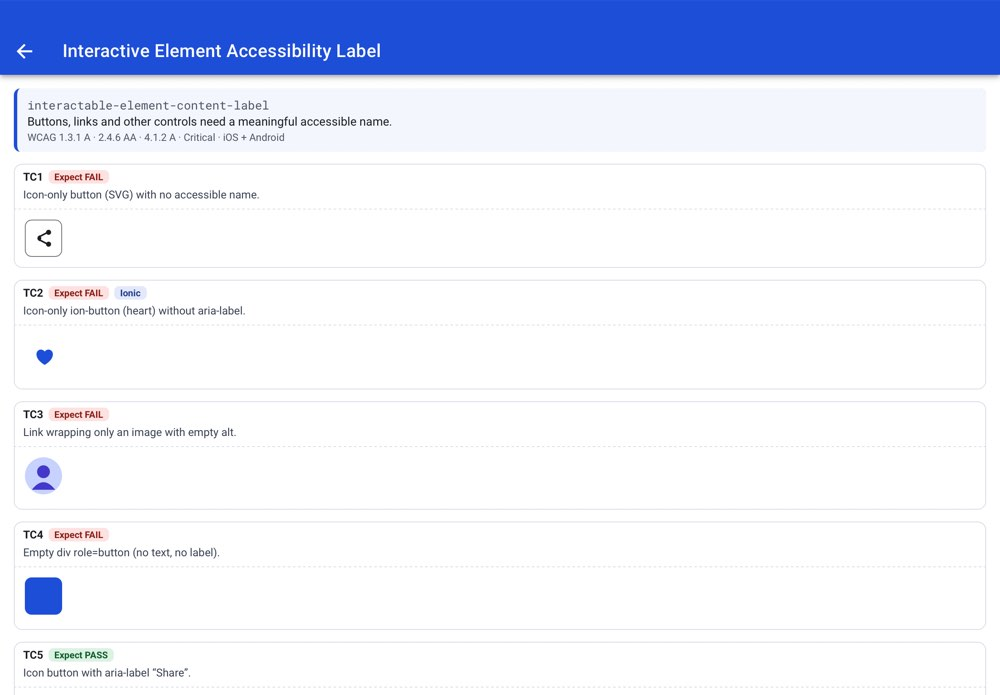
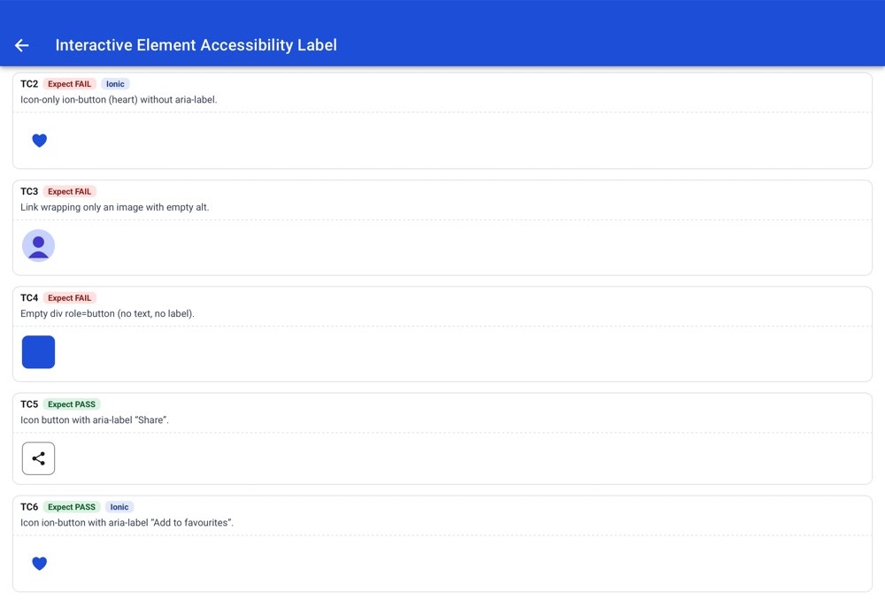
| TC | Expect | We capture (spoken caption) | Audit service (VoiceOver engine) | VoiceOver, screen recording | Comparison | Rule result |
|---|---|---|---|---|---|---|
| TC1 | FAIL | Button | Button | Button | Spoken output identical | fail |
| TC2 | FAIL | Button | Button | Button | Spoken output identical | fail |
| TC3 | FAIL | Link | Link | — | Spoken output identical | none |
| TC4 | FAIL | Button | Button | Button | Spoken output identical | fail |
| TC5 | PASS | Share, Button | Share, Button | Share, Button | Spoken output identical | ai_review |
| TC6 | PASS | Add to favourites, Button | Add to favourites, Button | Add to favourites, Button, end, main | Spoken output identical | ai_review |
Rule verdicts vs expected: TP 2 · TN 1 · ai 3
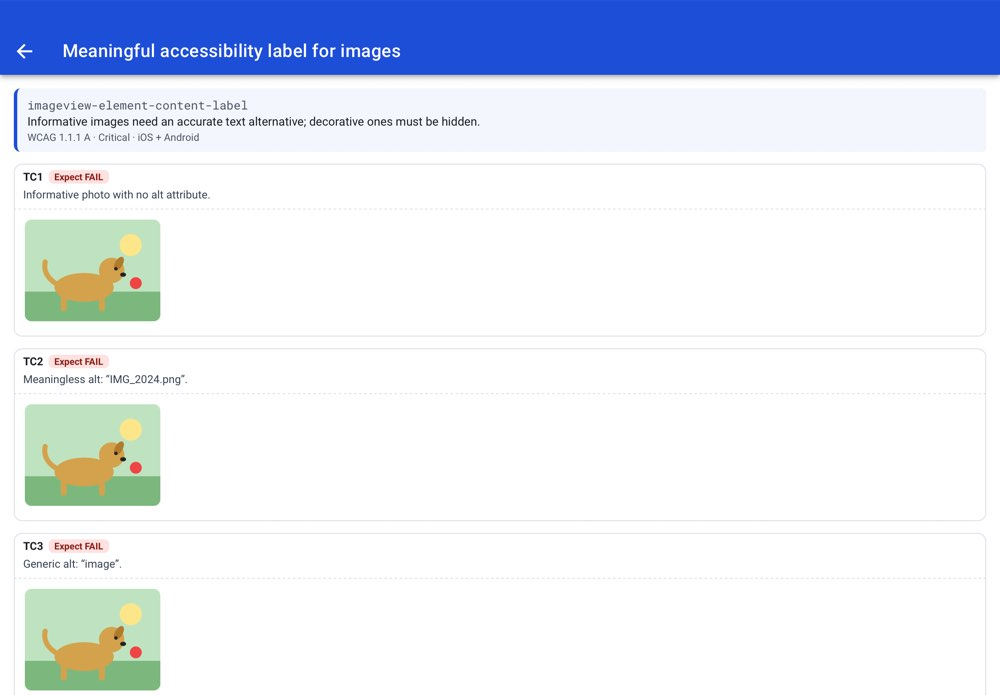
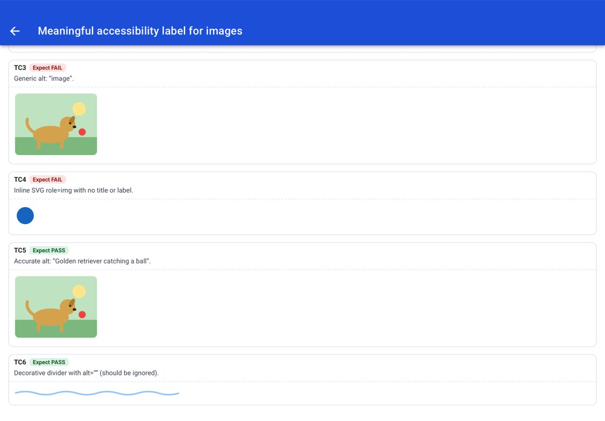
| TC | Expect | We capture (spoken caption) | Audit service (VoiceOver engine) | VoiceOver, screen recording | Comparison | Rule result |
|---|---|---|---|---|---|---|
| TC1 | FAIL | Image | Image | — | Spoken output identical | fail |
| TC2 | FAIL | IMG_2024.png, Image | IMG_2024.png, Image | IMG_2024.png. | Spoken output identical | ai_review |
| TC3 | FAIL | image, Image | — | — | Captured, not announced by VoiceOver | ai_review |
| TC3 | FAIL | — | image, Image | — | Announced, not captured | ai_review |
| TC4 | FAIL | Image | Image | — | Spoken output identical | fail |
| TC5 | PASS | Golden retriever catching a ball, Image | Golden retriever catching a ball, Image | Golden retriever catching, a ball | Spoken output identical | ai_review |
Rule verdicts vs expected: ai 5 · edge 1
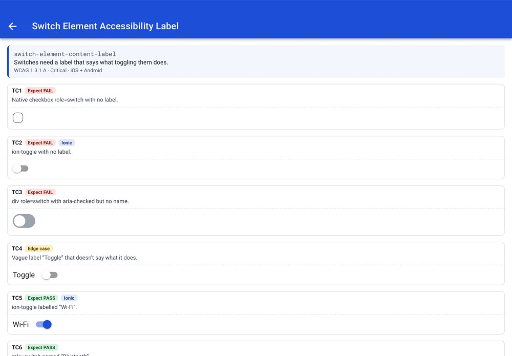
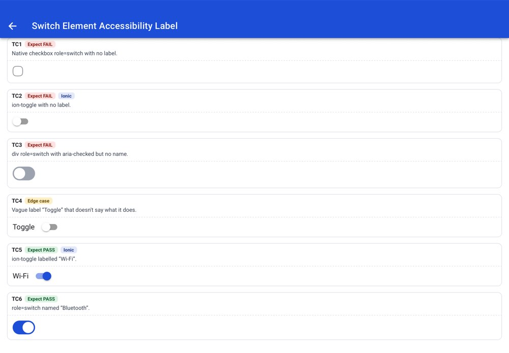
| TC | Expect | We capture (spoken caption) | Audit service (VoiceOver engine) | VoiceOver, screen recording | Comparison | Rule result |
|---|---|---|---|---|---|---|
| TC1 | FAIL | Switch button | 0, Button, Toggle | Switch button, off, Double-tap to toggle setting. | Name matches; role/state wording differs | ai_review |
| TC2 | FAIL | Switch button | 0, Button, Toggle | Switch button, off, Double-tap to toggle setting. | Name matches; role/state wording differs | ai_review |
| TC3 | FAIL | Switch button | 0, Button, Toggle | — | Name matches; role/state wording differs | ai_review |
| TC4 | EDGE | Toggle, Switch button | — | Toggle, Switch button, off, Double-tap to toggle setting. | Captured, not announced by VoiceOver | ai_review |
| TC4 | EDGE | — | Toggle, 0, Button, Toggle | — | Announced, not captured | ai_review |
| TC5 | PASS | Selected, Wi-Fi, Switch button | Wi-Fi, 1, Button, Toggle | Wi-Fi, Switch button, on, Double-tap to toggle setting. | Name matches; role/state wording differs | ai_review |
| TC6 | PASS | Selected, Bluetooth, Switch button | Bluetooth, 1, Button, Toggle | Bluetooth, Switch button, on, end, main, Double-tap to toggle setting. | Name matches; role/state wording differs | ai_review |
Rule verdicts vs expected: TP 2 · TN 1 · edge 1
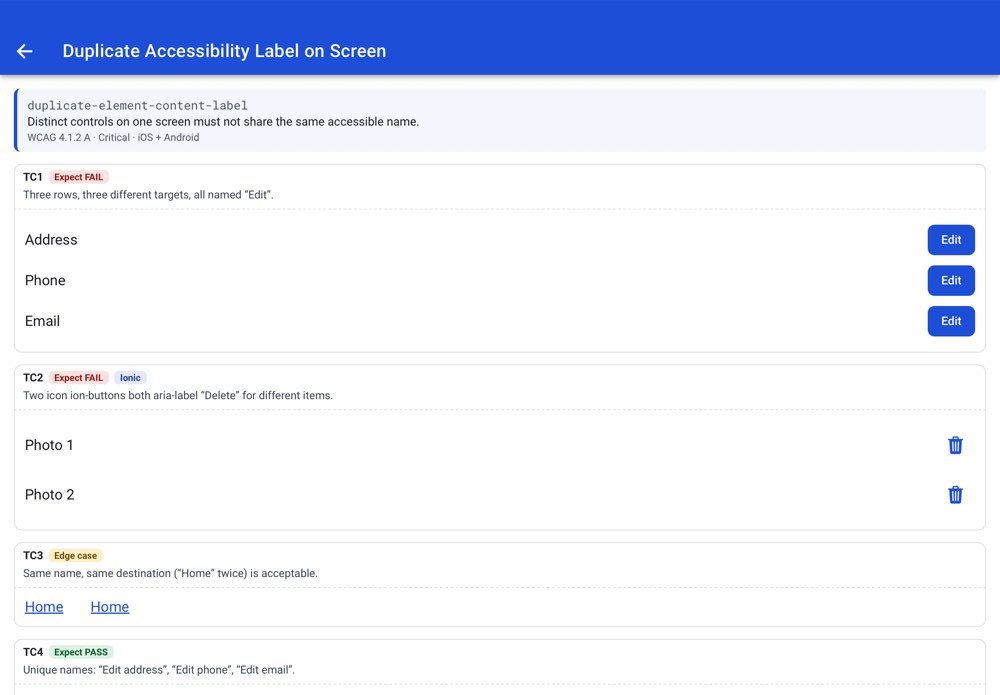
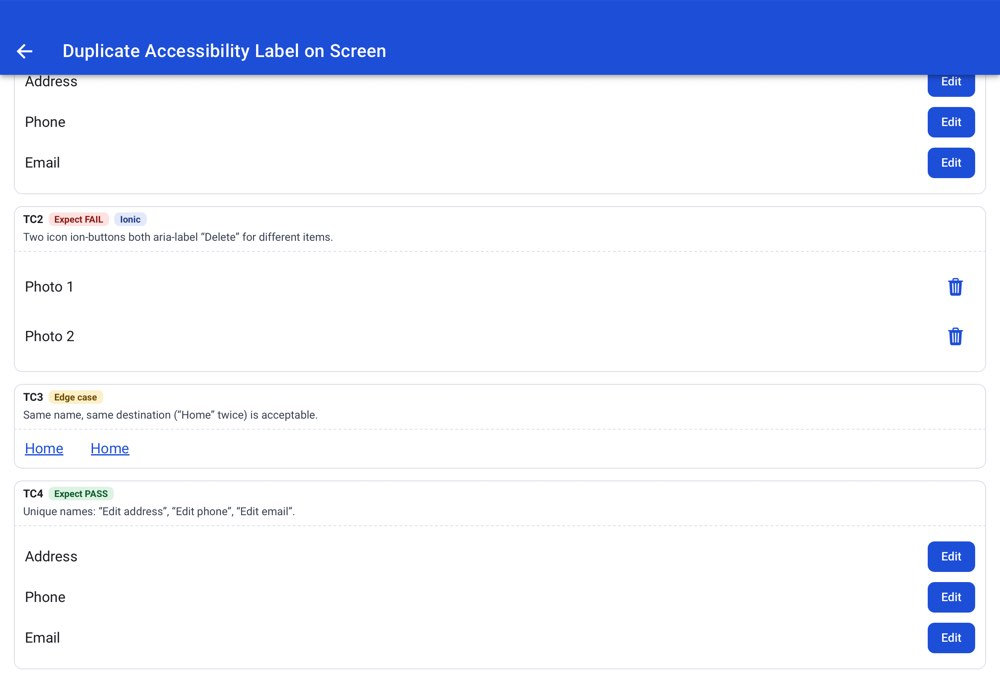
| TC | Expect | We capture (spoken caption) | Audit service (VoiceOver engine) | VoiceOver, screen recording | Comparison | Rule result |
|---|---|---|---|---|---|---|
| TC1 | FAIL | Edit, Button | Edit, Button | Edit, Button | Spoken output identical | fail |
| TC1 | FAIL | Address | Address | Address | Spoken output identical | fail |
| TC1 | FAIL | Edit, Button | Edit, Button | Edit address, Button | Spoken output identical | fail |
| TC1 | FAIL | Phone | Phone | Phone | Spoken output identical | fail |
| TC1 | FAIL | Edit, Button | Edit, Button | Edit phone, Button | Spoken output identical | fail |
| TC1 | FAIL | Spoken output identical | fail | |||
| TC2 | FAIL | Delete, Button | Delete, Button | Delete, Button | Spoken output identical | fail |
| TC2 | FAIL | Photo 1 | Photo 1 | Photo 1 | Spoken output identical | fail |
| TC2 | FAIL | Delete, Button | Delete, Button | — | Spoken output identical | fail |
| TC2 | FAIL | Photo 2 | Photo 2 | Photo 2 | Spoken output identical | fail |
| TC3 | EDGE | Home, Link | Home, Link | Home, Link | Spoken output identical | fail |
| TC3 | EDGE | Home, Link | Home, Link | — | Spoken output identical | fail |
| TC4 | PASS | Edit address, Button | Edit address, Button | — | Spoken output identical | pass |
| TC4 | PASS | address | Address | Address | Spoken output identical | pass |
| TC4 | PASS | Edit phone, Button | Edit phone, Button | — | Spoken output identical | pass |
| TC4 | PASS | phone | Phone | Phone | Spoken output identical | pass |
| TC4 | PASS | Edit email, Button | Edit email, Button | Edit email, Button, end, main | Spoken output identical | pass |
| TC4 | PASS | Spoken output identical | pass |
Rule verdicts vs expected: FN 4 · TN 1
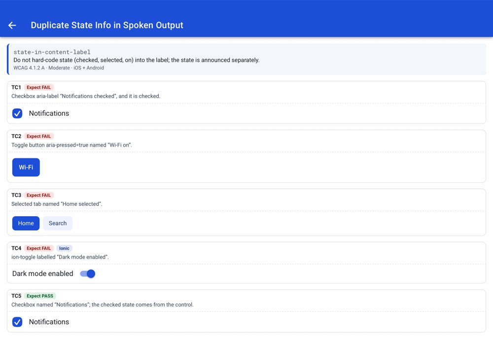
| TC | Expect | We capture (spoken caption) | Audit service (VoiceOver engine) | VoiceOver, screen recording | Comparison | Rule result |
|---|---|---|---|---|---|---|
| TC1 | FAIL | Notifications | Notifications | Notifications, Checkbox, ticked, Double-tap to toggle setting. | Spoken output identical | pass |
| TC1 | FAIL | Selected, Notifications checked, Checkbox | Notifications checked, 1, Button, Toggle | Notifications checked, Checkbox, ticked | Name matches; role/state wording differs | pass |
| TC2 | FAIL | Selected, Wi-Fi on, Button | Wi-Fi on, 1, Button, Toggle | Wi-Fi on, Toggle button, Pressed | Name matches; role/state wording differs | pass |
| TC3 | FAIL | Selected, Home selected, Button, Tab | Home selected, Selected | — | Name matches; role/state wording differs | pass |
| TC3 | FAIL | Search, Button, Tab | Search | Search, Tab | Name matches; role/state wording differs | pass |
| TC4 | FAIL | Selected, Dark mode enabled, Switch button | Dark mode enabled, 1, Button, Toggle | Dark mode enabled, Switch button, on, Double-tap to toggle setting. | Name matches; role/state wording differs | pass |
| TC5 | PASS | Notifications | Notifications, 1, Button, Toggle | — | Name matches; role/state wording differs | pass |
| TC5 | PASS | Selected, Notifications, Checkbox | Notifications | — | Name matches; role/state wording differs | pass |
Rule verdicts vs expected: TP 3 · FN 2 · TN 1
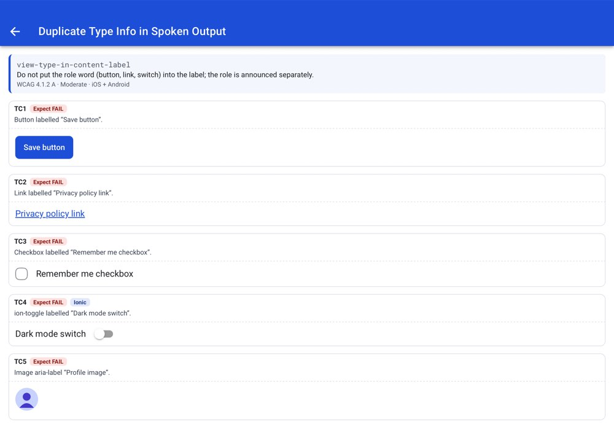
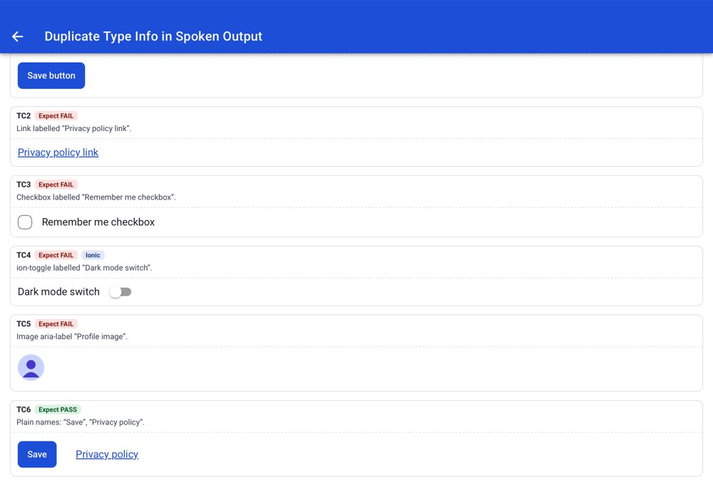
| TC | Expect | We capture (spoken caption) | Audit service (VoiceOver engine) | VoiceOver, screen recording | Comparison | Rule result |
|---|---|---|---|---|---|---|
| TC1 | FAIL | Save button, Button | Save button, Button | Save, Button | Spoken output identical | fail |
| TC2 | FAIL | Privacy policy link, Link | Privacy policy link, Link | Privacy policy link, Link | Spoken output identical | fail |
| TC3 | FAIL | Remember me checkbox | Remember me checkbox, 0, Button, Toggle | Remember me checkbox, Checkbox, unticked | Name matches; role/state wording differs | pass |
| TC3 | FAIL | Remember me checkbox, Checkbox | Remember me checkbox | — | Name matches; role/state wording differs | pass |
| TC4 | FAIL | Dark mode switch, Switch button | Dark mode switch, 0, Button, Toggle | Dark mode switch, Switch button, off, Double-tap to toggle setting. | Name matches; role/state wording differs | pass |
| TC5 | FAIL | Profile image, Image | Profile image, Image | — | Spoken output identical | fail |
| TC6 | PASS | Save, Button | Save, Button | Save, Button | Spoken output identical | pass |
| TC6 | PASS | Privacy policy, Link | Privacy policy, Link | Privacy policy, Link end, main | Spoken output identical | pass |
Rule verdicts vs expected: TP 3 · FN 1 · TN 1 · edge 1
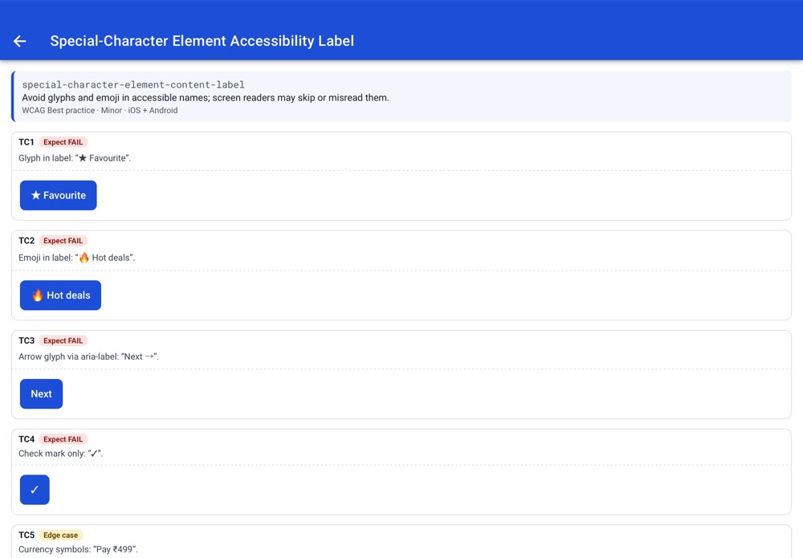
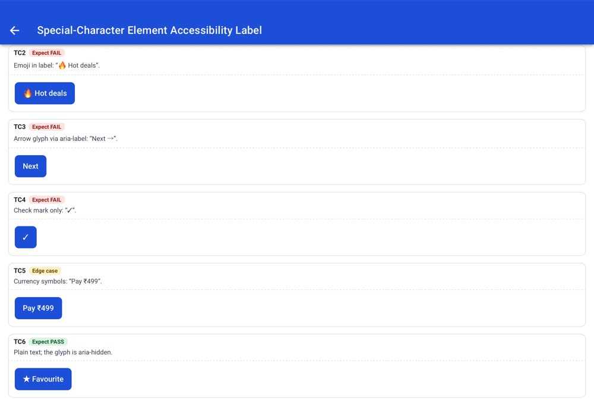
| TC | Expect | We capture (spoken caption) | Audit service (VoiceOver engine) | VoiceOver, screen recording | Comparison | Rule result |
|---|---|---|---|---|---|---|
| TC1 | FAIL | ★ Favourite, Button | ★ Favourite, Button | * Favourite, Button | Spoken output identical | fail |
| TC2 | FAIL | 🔥 Hot deals, Button | 🔥 Hot deals, Button | Hot deals, Button | Spoken output identical | fail |
| TC3 | FAIL | Next →, Button | Next →, Button | Next →, Button | Spoken output identical | pass |
| TC4 | FAIL | ✓, Button | ✓, Button | — | Spoken output identical | fail |
| TC5 | EDGE | Pay ₹499, Button | Pay ₹499, Button | Pay 3499 | Spoken output identical | pass |
| TC6 | PASS | Favourite, Button | Favourite, Button | Favourite, Button, end, main | Spoken output identical | pass |
Rule verdicts vs expected: TP 3 · TN 1 · edge 2
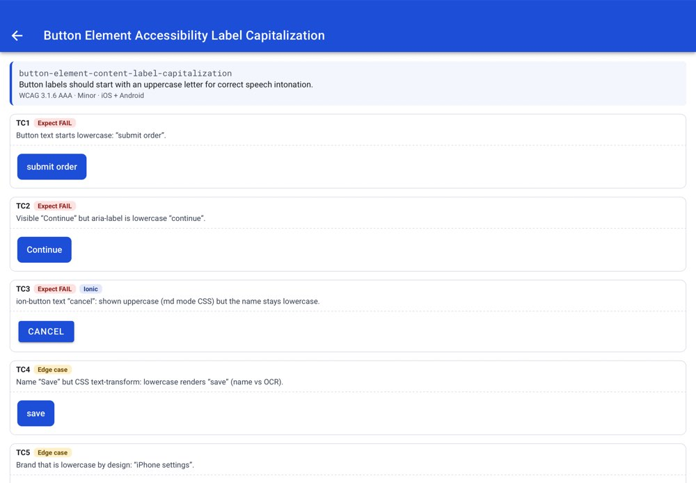
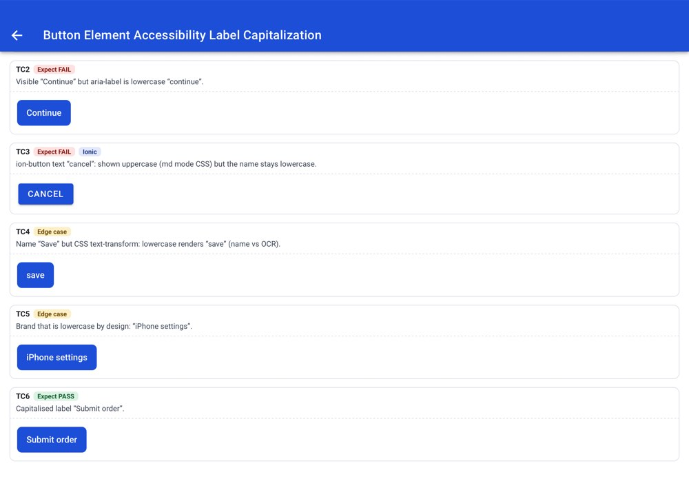
| TC | Expect | We capture (spoken caption) | Audit service (VoiceOver engine) | VoiceOver, screen recording | Comparison | Rule result |
|---|---|---|---|---|---|---|
| TC1 | FAIL | submit order, Button | submit order, Button | submit order, Button | Spoken output identical | fail |
| TC2 | FAIL | continue, Button | continue, Button | continue, Button | Spoken output identical | fail |
| TC3 | FAIL | cancel, Button | CANCEL, Button | CANCEL, Button | Spoken output identical | fail |
| TC4 | EDGE | Save, Button | save, Button | save, Button | Spoken output identical | pass |
| TC5 | EDGE | iPhone settings, Button | iPhone settings, Button | iPhone settings, Button | Spoken output identical | fail |
| TC6 | PASS | Submit order, Button | Submit order, Button | Submit order, Button, end, main | Spoken output identical | pass |
Rule verdicts vs expected: TP 3 · ai 2 · edge 1
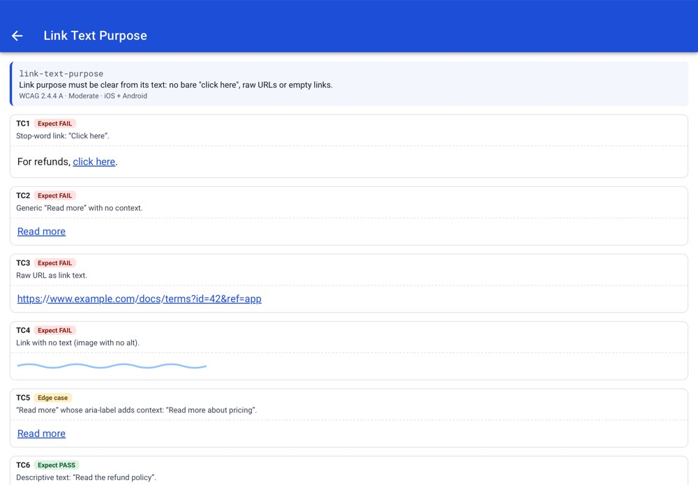
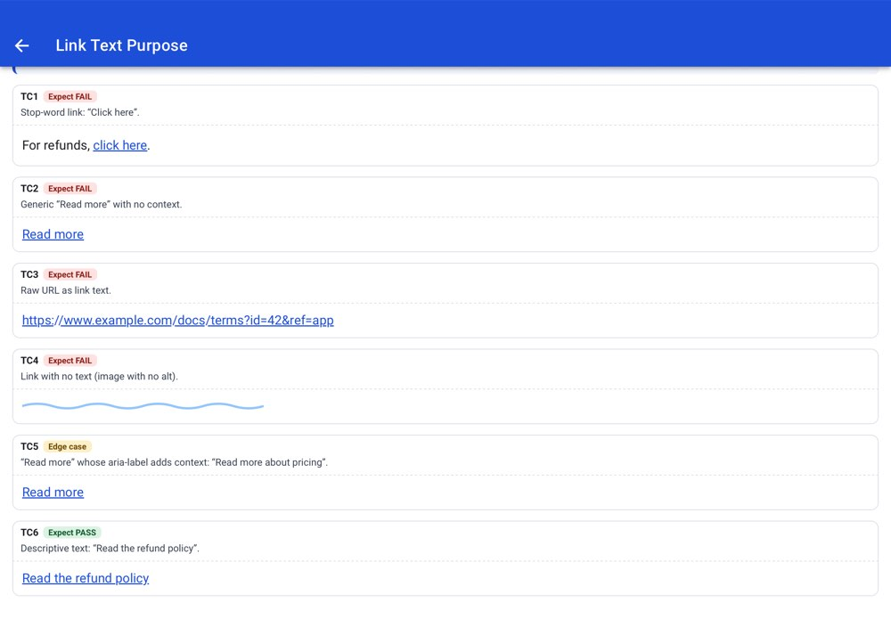
| TC | Expect | We capture (spoken caption) | Audit service (VoiceOver engine) | VoiceOver, screen recording | Comparison | Rule result |
|---|---|---|---|---|---|---|
| TC1 | FAIL | For refunds, . | For refunds, | For refunds,. | Name differs | fail |
| TC1 | FAIL | click here, Link | click here, Link | click here, Link | Spoken output identical | fail |
| TC1 | FAIL | — | . | — | Announced, not captured | fail |
| TC2 | FAIL | Read more, Link | Read more, Link | Read more, Link | Spoken output identical | fail |
| TC3 | FAIL | https://www.example.com/docs/terms?id=42&ref=app, Link | https://www.example.com/docs/terms?id=42&ref=app, Link | https://www.example.com/docs/terms?id=42&ref=app, Link | Spoken output identical | ai_review |
| TC4 | FAIL | Link | Link, Image | — | Name matches; role/state wording differs | fail |
| TC5 | EDGE | Read more about pricing, Link | Read more about pricing, Link | Read more about pricing, Link | Spoken output identical | ai_review |
| TC6 | PASS | Read the refund policy, Link | Read the refund policy, Link | Read the refund policy, Link end, main | Spoken output identical | ai_review |
Rule verdicts vs expected: TP 2 · FN 1 · TN 2
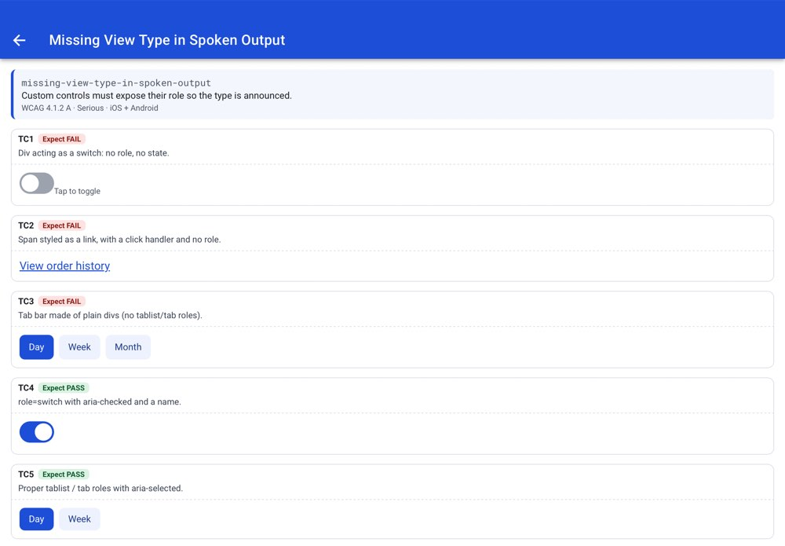
| TC | Expect | We capture (spoken caption) | Audit service (VoiceOver engine) | VoiceOver, screen recording | Comparison | Rule result |
|---|---|---|---|---|---|---|
| TC1 | FAIL | — | — | — | Captured, not announced by VoiceOver | none |
| TC1 | FAIL | Tap to toggle | Tap to toggle | Tap to toggle | Spoken output identical | none |
| TC2 | FAIL | View order history | View order history | View order history. | Spoken output identical | fail |
| TC3 | FAIL | Day | Day | Day. | Spoken output identical | fail |
| TC3 | FAIL | Week | Week | Week | Spoken output identical | fail |
| TC3 | FAIL | Month | Month | Month | Spoken output identical | fail |
| TC4 | PASS | Selected, Auto-play, Switch button | Auto-play, 1, Button, Toggle | Auto-play, Switch button, on | Name matches; role/state wording differs | pass |
| TC5 | PASS | Selected, Day, Button, Tab | Day, Selected | — | Name matches; role/state wording differs | pass |
| TC5 | PASS | Week, Button, Tab | Week | Week, Tab, end, main | Name matches; role/state wording differs | pass |
Rule verdicts vs expected: TP 2 · ai 4
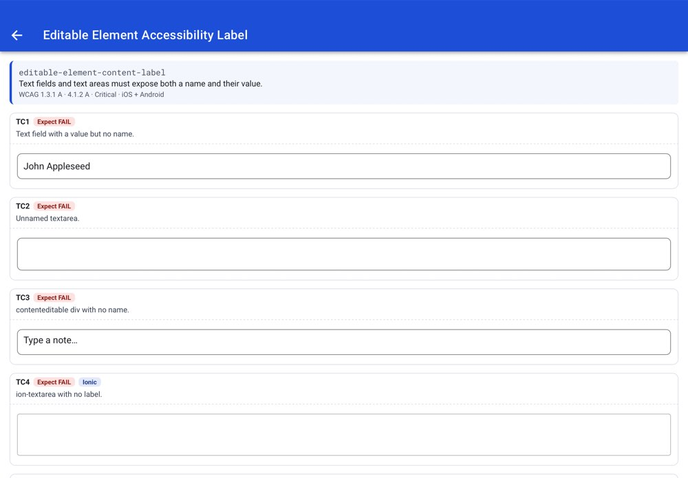
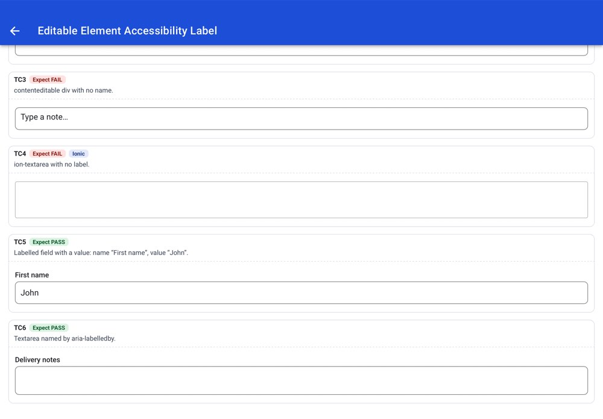
| TC | Expect | We capture (spoken caption) | Audit service (VoiceOver engine) | VoiceOver, screen recording | Comparison | Rule result |
|---|---|---|---|---|---|---|
| TC1 | FAIL | Text field | — | — | Captured, not announced by VoiceOver | ai_review |
| TC1 | FAIL | — | John Appleseed | John Appleseed, Text field | Announced, not captured | ai_review |
| TC2 | FAIL | Text field | — | — | Name matches; role/state wording differs | fail |
| TC3 | FAIL | Text field | — | — | Captured, not announced by VoiceOver | ai_review |
| TC3 | FAIL | — | Type a note… | Type a note..., Multi-line text field, Double-tap to edit. | Announced, not captured | ai_review |
| TC4 | FAIL | Text field | — | — | Name matches; role/state wording differs | fail |
| TC5 | PASS | First name | First name | First name, John, Text field | Spoken output identical | ai_review |
| TC5 | PASS | First name, Text field | First name, John | — | Name matches; role/state wording differs | ai_review |
| TC6 | PASS | Delivery notes | Delivery notes | Delivery notes, Multi-line text field, end, main | Spoken output identical | ai_review |
| TC6 | PASS | Delivery notes, Text field | Delivery notes | — | Name matches; role/state wording differs | ai_review |
Rule verdicts vs expected: TP 2 · ai 3 · edge 1
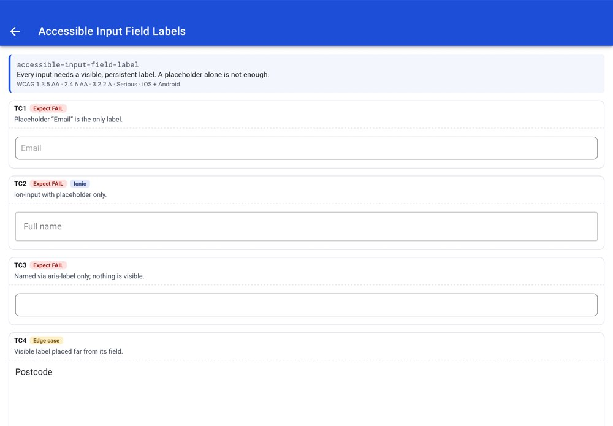
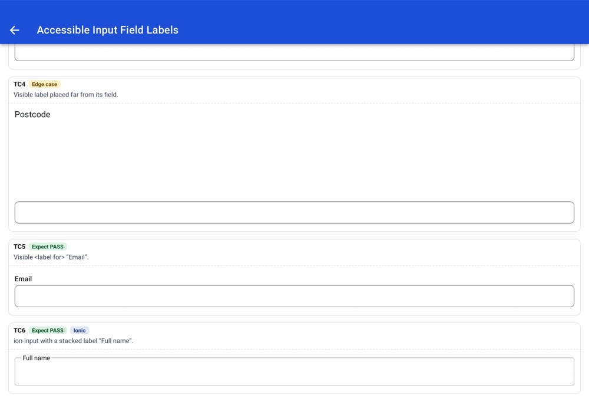
| TC | Expect | We capture (spoken caption) | Audit service (VoiceOver engine) | VoiceOver, screen recording | Comparison | Rule result |
|---|---|---|---|---|---|---|
| TC1 | FAIL | Email, Text field | Email, Text field | Name matches; role/state wording differs | fail | |
| TC2 | FAIL | Full name, Text field | Full name | Full name, Text field | Name matches; role/state wording differs | fail |
| TC3 | FAIL | City, Text field | City | City, Text field | Name matches; role/state wording differs | ai_review |
| TC4 | EDGE | Postcode | Postcode | Postcode, Text field | Spoken output identical | ai_review |
| TC4 | EDGE | Postcode, Text field | Postcode | — | Name matches; role/state wording differs | ai_review |
| TC5 | PASS | Email, Text field | Spoken output identical | ai_review | ||
| TC5 | PASS | Email, Text field | — | Name matches; role/state wording differs | ai_review | |
| TC6 | PASS | Full name, Text field | Full name | Full name, Text field, end, main | Name matches; role/state wording differs | ai_review |
Rule verdicts vs expected: FN 3 · TN 1
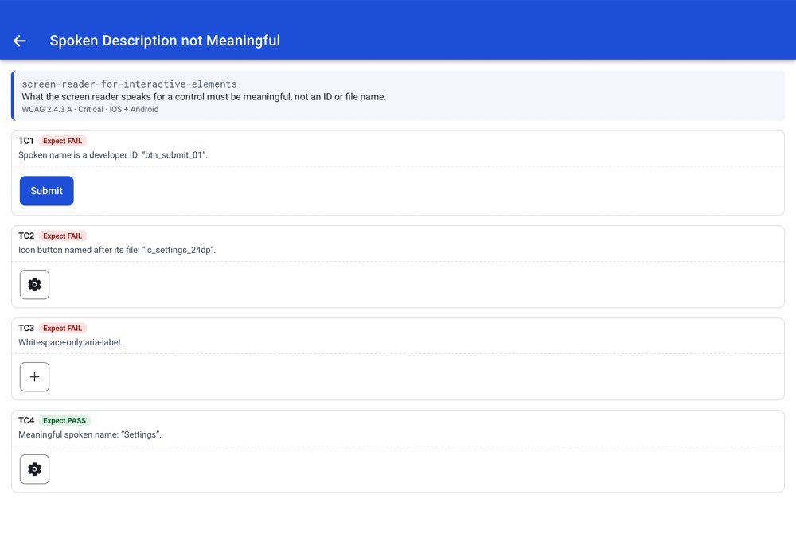
| TC | Expect | We capture (spoken caption) | Audit service (VoiceOver engine) | VoiceOver, screen recording | Comparison | Rule result |
|---|---|---|---|---|---|---|
| TC1 | FAIL | btn_submit_01, Button | btn_submit_01, Button | — | Spoken output identical | pass |
| TC2 | FAIL | ic_settings_24dp, Button | ic_settings_24dp, Button | ic_settings_24dp, Button | Spoken output identical | pass |
| TC3 | FAIL | Button | Button | — | Spoken output identical | pass |
| TC4 | PASS | Settings, Button | Settings, Button | Settings, Button, end, main | Spoken output identical | pass |
Rule verdicts vs expected: FN 4 · TN 2
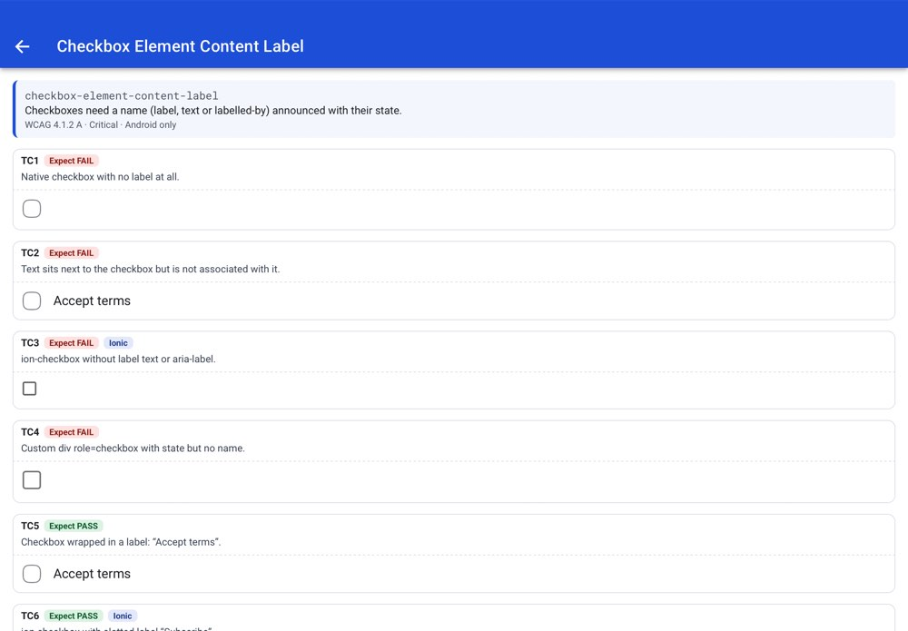
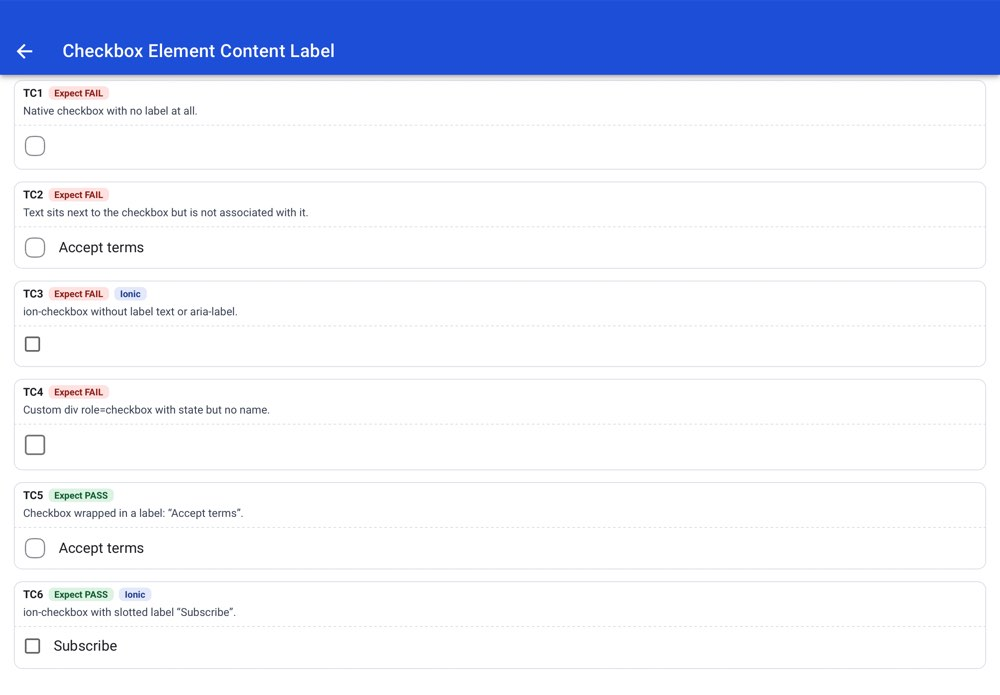
| TC | Expect | We capture (spoken caption) | Audit service (VoiceOver engine) | VoiceOver, screen recording | Comparison | Rule result |
|---|---|---|---|---|---|---|
| TC1 | FAIL | Checkbox | 0, Button, Toggle | — | Name matches; role/state wording differs | none |
| TC2 | FAIL | Checkbox | 0, Button, Toggle | Checkbox, unticked, Double-tap to toggle setting. | Name matches; role/state wording differs | none |
| TC2 | FAIL | Accept terms | Accept terms | Accept terms | Spoken output identical | none |
| TC3 | FAIL | Checkbox | 0, Button, Toggle | — | Name matches; role/state wording differs | none |
| TC4 | FAIL | Checkbox | 0, Button, Toggle | — | Name matches; role/state wording differs | none |
| TC5 | PASS | Accept terms | Accept terms, 0, Button, Toggle | Accept terms, Checkbox, unticked | Name matches; role/state wording differs | none |
| TC5 | PASS | Accept terms, Checkbox | Accept terms | — | Name matches; role/state wording differs | none |
| TC6 | PASS | Subscribe, Checkbox | Subscribe, 0, Button, Toggle | Subscribe | Name matches; role/state wording differs | none |